神农尝百草
神农氏是中国古代神话传说中的人物，他为了掌握草药的特性，亲自实践，遍尝百草，偶然得到了荼（茶叶）解毒。神农氏作为茶的发现者，虽然其真实性未有考古证据证实，但其故事体现了茶在古代就被人们所重视。
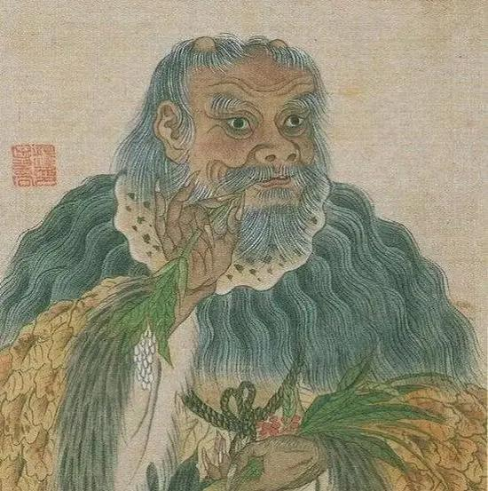
东汉末年华佗与茶
东汉末年的名医华佗在《食论》中提到："苦茶久食，益意思。"这是历史上第一次关于茶具有用药价值的记载。他以茶水代替酒水招待客人，以此来表达自己的节俭和健康意识，后来茶渐渐地成为了魏国民众喜爱的饮品。
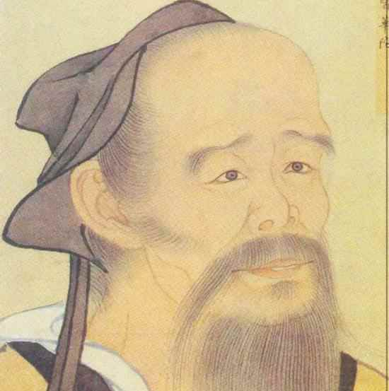
王褒《僮约》与茶事
汉人王褒所写的《僮约》中记载了 “武阳买茶”“烹茶尽具”，这表明汉代已经有了饮茶和买茶的行为，也能看出当时茶叶买卖交易已经存在，从侧面反映出可能已有大量人工种植茶叶，四川地区逐渐成为产茶盛地。
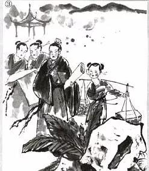
司马相如与《凡将篇》
司马相如是汉代著名文学家。其于公元前155年游学于梁孝王属地时，首次在文献中记载了茶。他在《凡将篇》中从药物角度谈到了茶，其中包括“荈诧”，这是巴蜀地区对茶的一种称呼，说明当时茶已被认识到具有一定的药理作用。
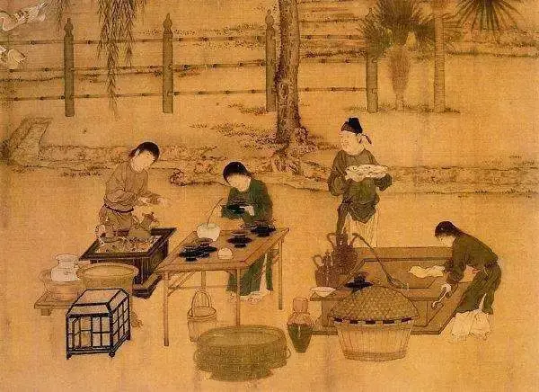
三国时期孙皓赐茶代酒
三国时期，吴国的国君孙皓特别爱酒，每次给大臣庆功或宴请宾客时，都大设酒宴，不醉不归。当时吴国有个文韬武略的大臣韦曜，很得孙皓赏识，但是他偏偏酒量不大，一喝就醉，醉了不是耍酒疯，就是大病一场。 孙皓虽然嗜酒，却也是个爱才的国君。此后，每次设酒宴，孙皓就让人暗中把韦曜喝的酒换成汤色相似的茶。孙皓允许韦曜以茶代酒，至少说明在三国时期，茶就已经成为一种饮品。
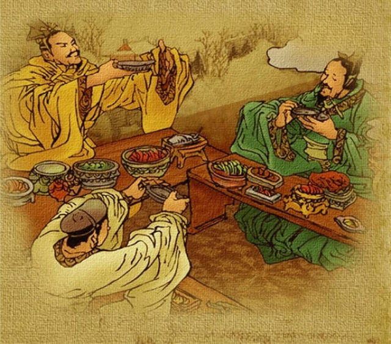
诸葛亮与茶
川陕地区： 诸葛亮在刘备白帝城托孤后，在沔阳的定军山屯兵 8 年，在修水利、垦荒地、养蚕桑和种植茶树方面作出极大贡献。他以茶为媒介，联络西北部的羌氐族，在沔阳西北古陈仓道沮水一带设立 “茶店子”，还在略阳县的一座山上设立接官厅，邀请羌氐族首领品茶议事，将此山取名为 “煎茶岭”。
云南地区：诸葛亮南征孟获时，军队深入密林，士兵因瘴气生病，当地居民告知喝茶可治愈，诸葛亮命人采摘茶叶烹水，治好了士兵的病。他平定南中后，大力发展和推广茶叶。当地人称南糯山为 “孔明山”，称茶树为 “孔明树”，尊孔明为 “茶祖”。基诺族、布朗族等各族村寨，每年在诸葛亮诞辰这天举行 “茶祖会”。普洱市古称思茅市，也源自诸葛亮的取名，据说他南征至此，因思念南阳家乡的茅庐，便把此地命名为 “思茅”。
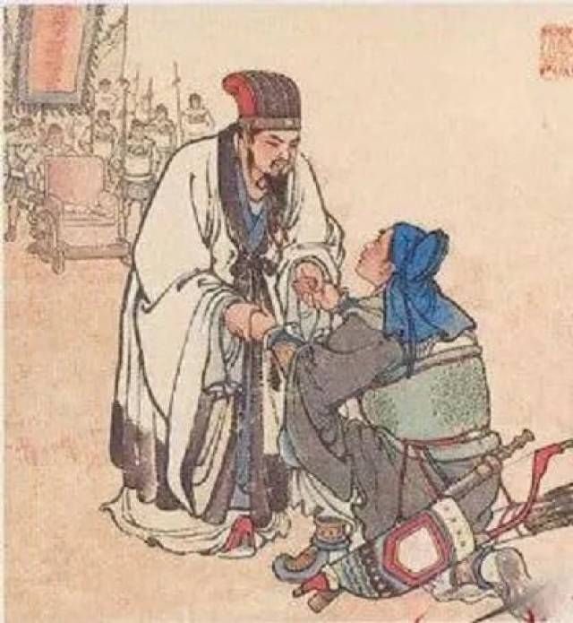
王肃与酪奴
王肃，字恭懿，琅邪(今山东临沂)人。曾在南朝齐任秘书丞。因父亲王奂被齐国所杀，便从建康(今江苏南京)投奔魏国(今山西大同，是其国都)。魏孝帝随即授他为大将军长史。王肃在南朝时，喜欢饮茶，到了北魏后，虽然没有改变原来的嗜好，但同时也很会吃羊肉奶酪之类的北方食品。当人问"茗饮何如酪浆?"时，他则认为茶是不能给酪浆做奴隶的。
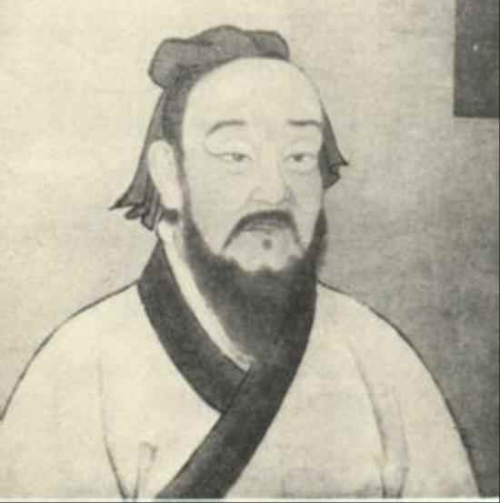
王濛与水厄
王蒙，东晋晋阳人，嗜茶成癖，自己一日数次地喝茶，且有客人来一定要与客同饮。 但东晋的大臣中有不少是从北方南迁的士族，根本喝不惯茶，只觉得茶苦涩得难以下咽，又碍于情面又不得不喝，所以到王蒙家喝茶一时成了＂痛苦＂的代名词，于是，人们每次去王蒙家时，临出行，就戏称“今日有水厄”。 “水厄”一词由此而生。“水厄＂从字面上理解就是因水而生的厄运。后来，水厄成了茶的一个别称，并一直流传下来。
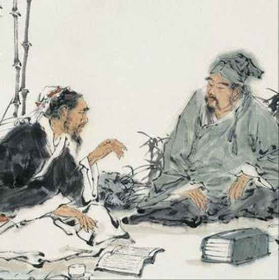
陆纳杖侄
事见《茶经》转《晋中兴书》：“陆纳为吴兴太守，时卫将军谢安常欲诣纳，纳兄子俶怪纳，无所备，不敢问之，乃私蓄十数人馔。安既至，所设唯茶果而已。俶遂陈盛馔珍羞必具，及安去，纳杖俶四十，云：‘汝既不能光益叔父，柰何秽吾素业？’”
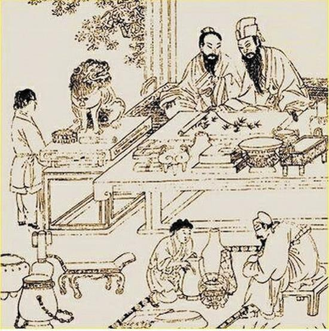
神仙鬼异饮茶-广陵老姥
《广陵耆老传》：“广陵茶姥者，不知姓氏乡里，而轻健有力，耳聪目明，发鬓滋黑。耆旧相传云：晋元南渡后，见之四百年，颜状不改。每旦，将一器茶卖于市，市人争买，自旦至暮，而器中茶常如新熟，未曾减少。吏系之于狱，姥持所卖茶器，自牖中飞去。”《茶经》引文为据原文所改写，本事见《墉城集仙录》（《太平广记》卷七十《茶姥》）。“见之四百年，颜状不改”，“姥持所卖茶器，自牖中飞去”，此广陵茶姥定非凡人，当为仙流。
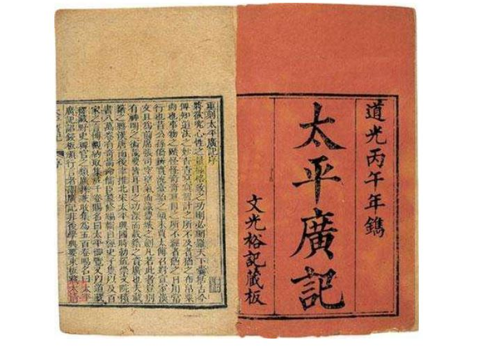
南齐世祖武帝萧颐以茶为祭
南齐世祖武帝萧颐倡导以茶为祭品，颁遗诏：“我灵座上，慎勿以牲为祭，但设饼果、茶饮、干饭、酒脯而已。” 民间亦流行以茶祭祖祀鬼神，剡县陈务妻 “好饮茶茗，以宅中有古冢，每饮辄先祀之”，因而得到古冢鬼魂的善报
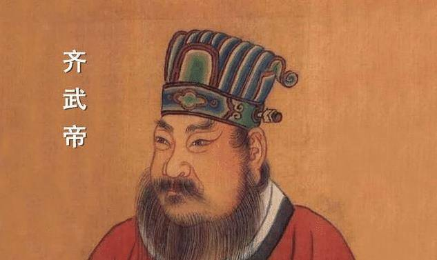
虞洪遇丹丘子
《神异记》记载：“余姚人虞洪，入山采茗，遇一道士，牵三青牛，引洪至瀑布山，曰：‘予，丹丘子也。闻子善具饮，常思见惠。山中有大茗，可以相给，祈子他日有瓯牺之余，乞相遗也。’因立奠祀。后常令家人入山，获大茗焉。”，翻译为：余姚人虞洪入山采茗，遇丹丘子，引洪至瀑布山采大茗，后虞洪因立祀茶祭。茶饮从日常生活饮用到祭祖祀鬼、供神奉佛，被赋予了更深层次的茶事礼规。
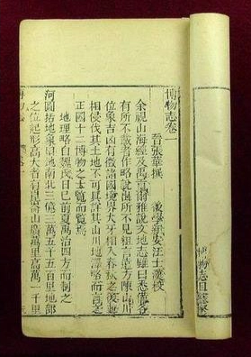
郭璞与茶
郭璞为晋代史学家、天文学家，精茶史。他撰写的《〈尔雅〉注》卷九《释木》“槚，苦荼” 条云：“树小似栀子，冬生，叶可煮作羹饮。今呼早采者为茶，晚取者为茗，一名荈，蜀人名之苦荼。” 这是我国最早对茶的权威性考辨，且他的这一研究大部分是在宜昌完成的。
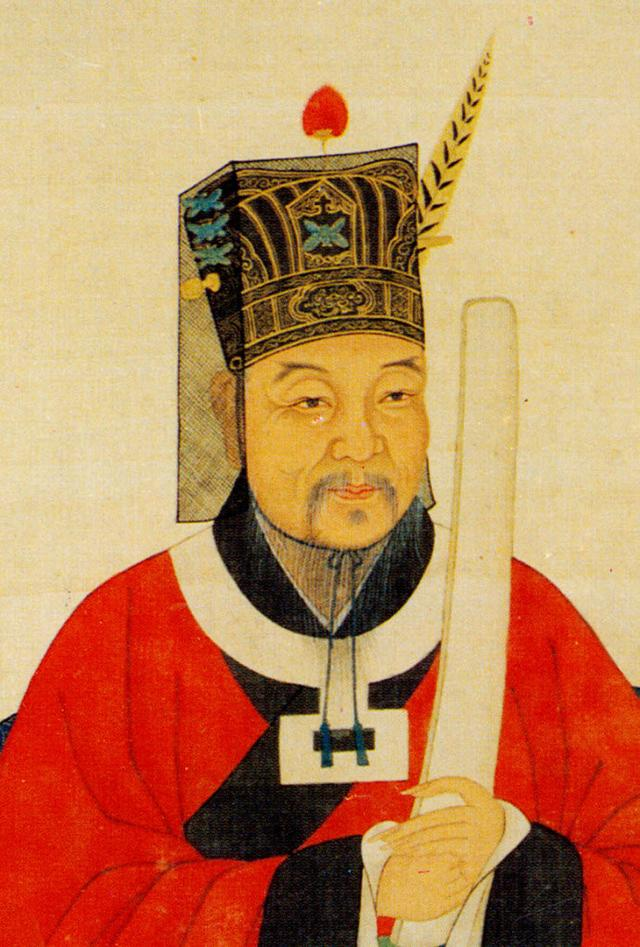
唐代陆羽与《茶经》
唐朝的陆羽被誉为"茶圣"，上元初年（760年），陆羽隐居苕溪（今浙江湖州），开始撰写《茶经》。一般认为《茶经》完成于780年左右，该书是世界第一部茶叶专著，系统而全面地论述了栽茶、制茶、饮茶、评茶的方法和经验，对茶业和茶文化的发展作出了卓越贡献。
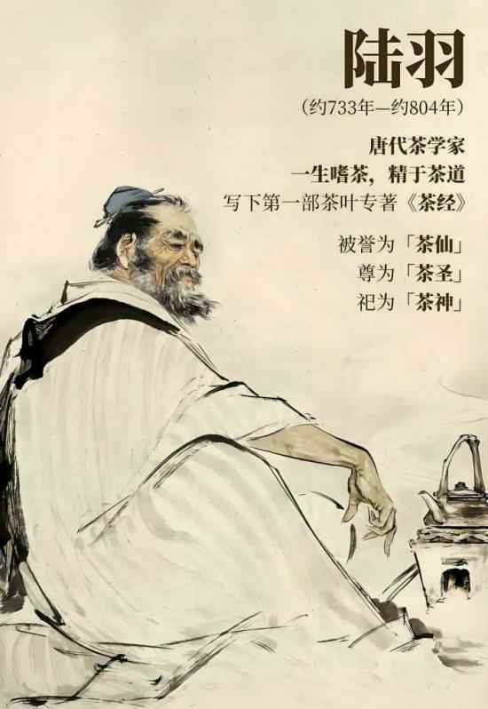
茶马古道
唐代中期（公元7世纪左右）茶马古道是中国南部和西南部一条历史悠久的交通路线。在古代，茶叶和其他商品是由马匹、骆驼和人力运输沿着这条路线来运送的。这条路线的开辟，使得茶叶从中国传播到了印度、欧洲和非洲等地，成为了一种世界茶文化的象征。
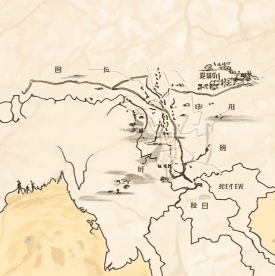
阳羡茶成为贡茶
陆羽将阳羡茶捧作贡品，使得阳羡茶成为唐代贡茶新贵。每年有三万人采茶，场面浩大。驿马疾驰将阳羡茶青送往长安，银瓶口封蜡，如同将吴侬软语凝成琥珀。
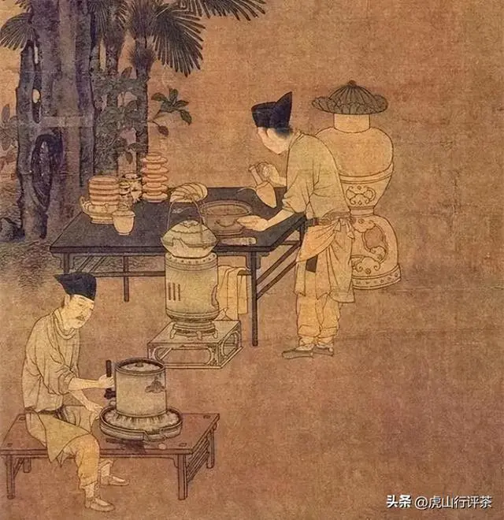
唐文宗调整贡茶时令
太和七年，唐文宗因宦官专权，将贡茶时令从冬至挪到立春，后又复归立春后采制。他认为提前采摘的冬制贡茶，就像被阉割的朝纲，而立春后采制的茶芽，是借草木荣枯重构礼乐。
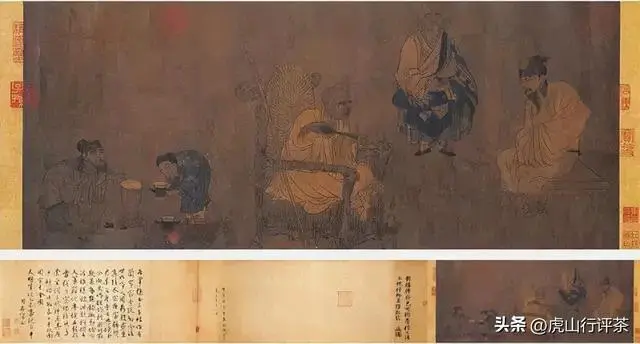
李德裕 “水递” 与品鉴泉水
宰相李德裕为喝到惠山泉，设置 “水递” 驿站，让惠山泉沿着官道星夜奔流八百里到长安。取水官吏曾在石头城下偷换江水，却被李德裕的舌尖尝出，他能分辨出扬子江心南零水的清冽，体现了士大夫对完美秩序的执念。

陈元光与光州茶
光州弋阳人陈元光平定泉潮间的蛮獠啸乱、创置漳州后，将家乡光州的种茶、制茶、饮茶之风带到漳州，还留下了 “采茶喜钻新榆火”“茶壶团素月” 等诗句。
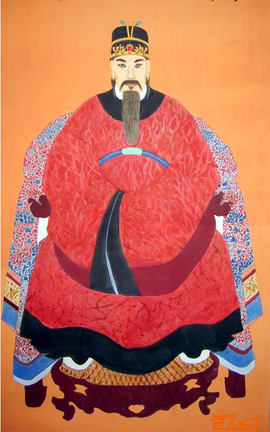
武则天与光州茶
天册万岁年间，光州刺史封叔廉入朝述职时，恰逢武则天肠胃不适，便敬献所带的上品光州干茶。武则天饮后病恙全无，食欲大增，不仅重赏封叔廉，还命其回光州修建千佛塔一座以彰此茶之功。

房克让归茶园于百姓
唐代宗朝，各名茶产地始建官营贡茶院。房玄龄（579—648年）六代孙房克让曾任职光州刺史。唐代宗朝，在各名茶产地，始建官营贡茶院，专司茶叶产制及进贡。《太平御览·饮食部·卷二十五》中记载：“（《唐史》）又曰：元和十四年（819年），归光州茶园于百姓，从刺史房克让之请。”（《册府元龟》亦收录）光州剌史房克让上书朝廷，归光州茶园于百姓，被采纳。

苦口师的由来
苦口师是茶的雅称。 晚唐著名诗人皮日休之子皮光业(字文通)，自幼聪慧，十岁能作诗文，颇有家风。皮光业容仪俊秀，善谈论，气质倜傥，如神仙中人。吴越天福二年(公元937年)拜丞相。有一天，皮光业的中表兄弟请他品赏新柑，并设宴款待。那天，朝廷显贵云集，筵席殊丰。皮光业一进门，对新鲜甘美的橙子视而不见，急呼要茶喝。于是，侍者只好捧上一大瓯茶汤，皮光业手持茶碗，即兴吟到："未见甘心氏，先迎苦口师"。此后，茶就有了"苦口师"的雅号。
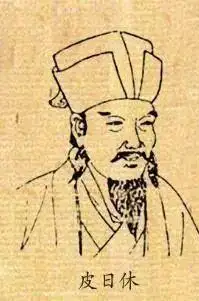
苏东坡与东坡茶
宋代文学家苏东坡是茶文化的重要代表人物，他曾经写过一首《茶经》。这首诗表达了他对茶文化的热爱和对品茶的理解。他也被传为发明了东坡茶，使用竹筒泡茶的方法制作。这种泡法会让茶水更加清香，也更容易制作。东坡茶还因为苏东坡的名字而得名。
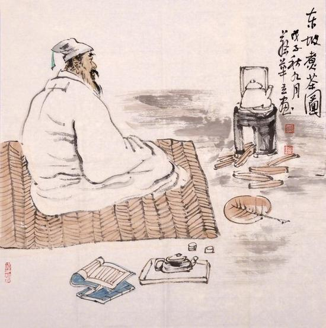
范仲淹斗茶
范仲淹曾写过《和章岷从事斗茶歌》，诗中 “黄金碾畔绿尘飞，碧玉瓯中翠涛起。斗茶味兮轻醍醐，斗茶香兮薄兰芷”，描绘了斗茶的热闹场景和茶的色香味。当时文人雅士之间流行斗茶，范仲淹通过这首诗展现了宋代斗茶的文化风尚和人们对茶的热爱。

苏轼赠茶
苏轼的亲家曹九章（时任光州知州）借走苏轼所藏黄居寀画作临摹，致苏轼无法应 “王君” 之求出借画作。苏轼遂致函好友陈季常，委托他代向王君解释，并 “却寄团茶一饼与之” 以表歉意，该函留存至今，收藏在台湾故宫博物院。
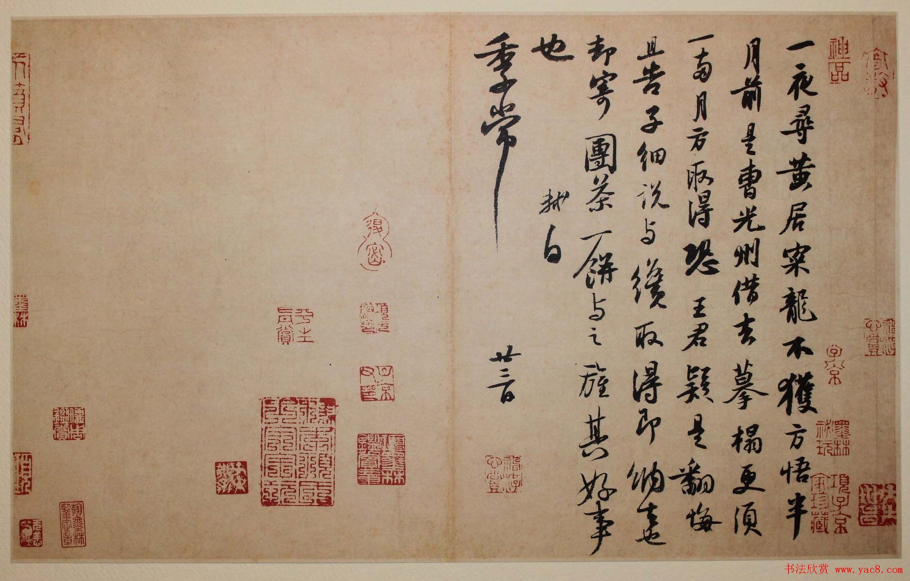
宋庠与光州茶敕书
宋庠的诗文集《元宪集・卷二十八》中收录了《赐知光州郭昭升进新茶敕书二首》，提到 “土毛之繁，茗品尤上。先春效味，输贡有经”“茶品之英，淮区攸产。当新阳之盈偾，先百蘤以萌滋” 等，体现了光州茶在宋代的地位。
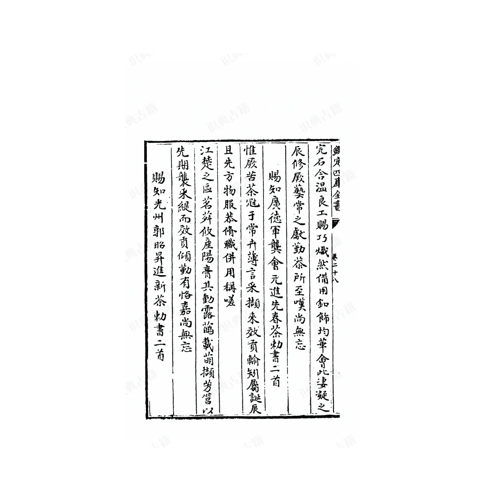
斗茶盛行
斗茶始于晚唐，盛于宋代，是品评茶叶质量高低和比试点茶技艺高下的一种茶艺，以点茶方法进行评茶及比试茶艺技能的竞赛活动，整个宋代对此乐此不疲。
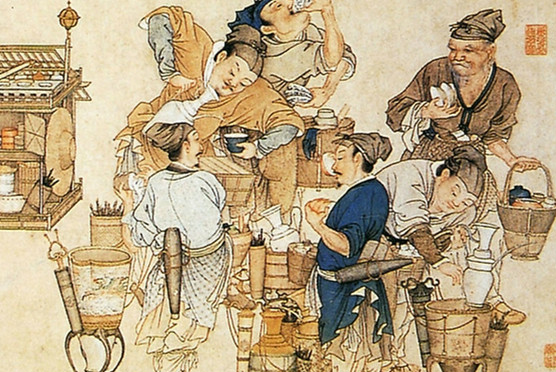
茶马互市
朱元璋设立茶马司，管理同少数民族地区的茶马交易，逐步建立起一套以茶马司为主，包括茶课司、转运司等在内的茶马互市体系。这一制度从茶叶的种植、征收、加工、存储到运输及交易等各个环节都设立了专门机构负责。茶马互市诞生是因为西藏不产茶，对于藏人来说，茶是生命中不可或缺的部分。所以很早的时候，藏人就已经养成了喝酥油茶的习惯，而茶主要来自内地；在封建社会，而在内地，民间役使和军队征战都需要大量的骡马，但供不应求，而藏区和川、滇边地则产良马。于是，具有互补性的茶和马的交易即“茶马互市”便应运而生。
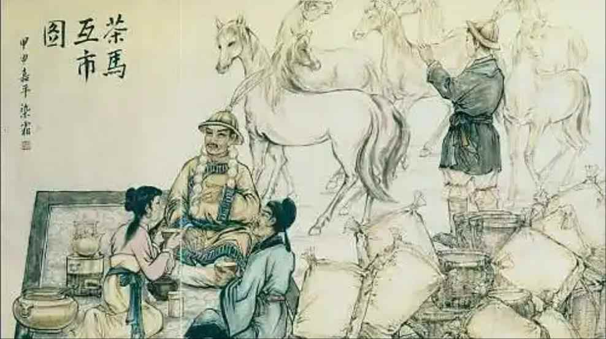
朱元璋废团茶兴散茶
明太祖朱元璋得了天下后，深怕南宋那种安逸奢靡的饮茶风气坏了江山社稷，于是废除了制作精美的龙凤团茶，改为散茶。他在宫里带头喝散茶，从此散茶的沏泡法逐渐流行，改变了宋元时期复杂的点茶方式及相关工具的使用。
朱权著《茶谱》
朱棣登基后，夺了朱权的兵权并将其打发到江西监视居住。朱权为求活命，扮成隐士，在受监控的岁月里，他琢磨喝茶并写下《茶谱》。他认为茶应回归本性，不必像前人那样过度加工和讲究繁琐的程序，提倡大道至简的茶思想，对后世茶道美学产生了重要影响。
杭州茶坊兴起
据田汝成《西湖游览志余》记载，杭州先前有酒馆而无茶坊，嘉靖二十六年三月，李氏开茶坊，获利甚厚，远近仿之，旬日之间开茶坊者达五十余所，城市茶馆再度兴起。
文人茶会
明代人追求隐逸清幽的饮茶环境，茶会大多开在山水林木之间。如陈继儒著《茶话》中提到 “一人得神，二人得趣，三人得味”，茶会对人数有一定要求，文人雅客邀请三两好友出席，期间品茗抚琴、吟诗作画，追求艺术与自然相融合的精神境界。
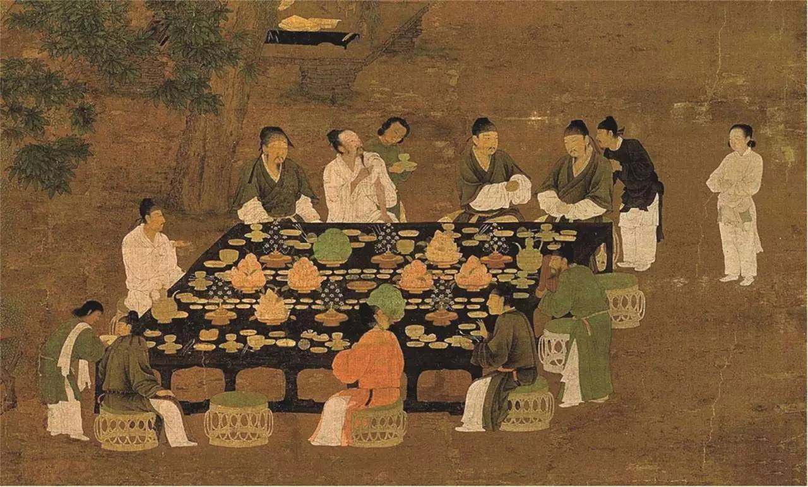
郑和下西洋与茶叶传播
郑和奉使七次远涉重洋，到达中南半岛、南洋群岛、孟加拉、印度、斯里兰卡、阿拉伯半岛等30多个国家或地区，最远到达非洲东海岸和红海沿岸。每次均携带茶叶，或赠或市，极大地促进了茶叶与茶文化在各地的流行。
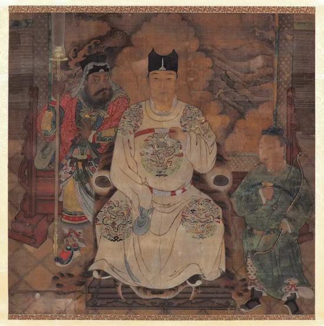
乾隆与龙井茶
乾隆皇帝继承了皇祖、皇考的爱好，并多有创新。在他的一生中，有很多与茶叶相关的故事，其中与龙井茶的故事最为著名。作为中国历史上最长寿、执政时间最长的皇帝，乾隆尤其喜欢写诗，据统计，他一生写了四万多首诗，其中描写茶叶的就有四百多首（这还不包含诗中带有“茶”字），作为一位日理万机的最高执政者，能够写如此之多的茶诗，可见其对于茶的喜爱之深，乾隆皇帝从一代帝王的生活情趣出发，写出了其茶事、茶情、茶境。在乾隆皇帝的茶诗中，龙井茶诗的数量很多，这与乾隆皇帝对龙井茶的喜爱是分不开的。
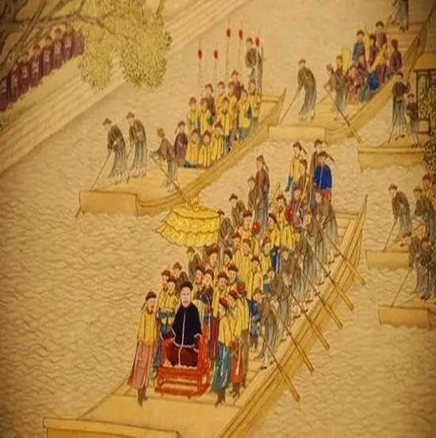
贡茶故事
清代贡茶产地进一步扩大，有些贡茶茶名是皇帝钦定。康熙皇帝赐名碧螺春茶，岁必采办进贡。乾隆游江南时在杭州西湖龙井村指定了十八棵御茶，使西湖龙井茶名声更大，岁贡更多。不过，贡茶也加重了劳动人民的生活负担，如陈章《采茶歌》中 “焙成粒粒比莲心，谁知侬比莲心苦”，表达了对采制龙井茶艰辛的同情。
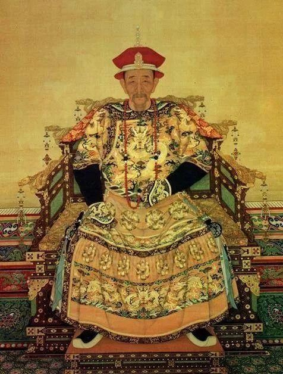
茶馆剧场出现
清代前期商业戏班在酒馆演出，后因喧闹渐衰，而茶园里仅备清茶和点心，环境适于观赏戏曲，于是在乾隆时期出现了茶馆剧场，受到人们的欢迎。
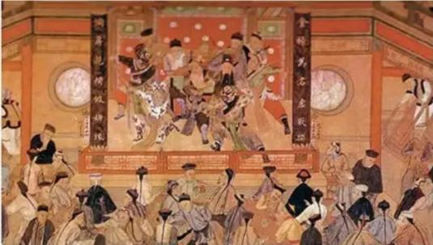
小说中的茶事
清代许多著名小说中都有茶的故事，如李渔《十二楼・奇锦楼》中的 “生二女连吃四家茶”，吴敬梓《儒林外史》中的 “马二先生游湖访茶店”，曹雪芹《红楼梦》中的 “栊翠庵茶品梅花雪”，李汝珍《镜花缘》中的 “小才女亭内品茶”，李缘园《歧路灯》中的 “盛希侨地藏庵品茶”，曾朴《孽海花》中的 “清茶话旧侯夫人名噪赛工场” 等。
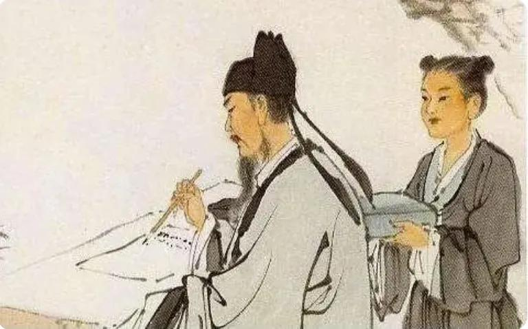
乾隆与三清茶
乾隆十一年秋，乾隆帝巡山西五台山回程路过河北定兴，遇雪天选用梅花、松实、佛手，用雪水烹煮品饮，称 “三清茶”。他认为梅花清高幽香、松实甘甜饱满、佛手温润香雅，雪水是烹茶宝贵配方。乾隆帝将其作为重华宫新年 “茶话会” 专用茶，还下令制作专用茶具，亲自督办，并多次作诗夸赞。
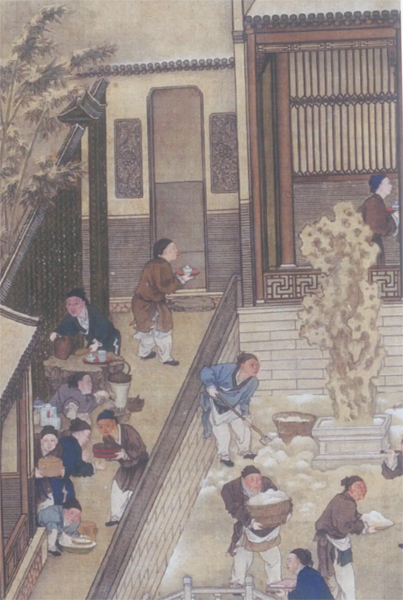
纪晓岚设茶谜
纪晓岚的亲家卢见曾在京外任两淮转运使时，铺张挥霍，致使盐税亏空。朝廷决定对其查访，纪晓岚得知后，想给卢见曾报信又不敢直接写信。于是他派遣心腹，连夜送去一个空信封，内装一些盐，信封用茶叶封口。 卢见曾收到后略作沉思，悟到 “茶” 指 “查”，意即 “茶（查）盐（盐账）空（亏空）”，明白已东窗事发，急忙转移财产，最终未遭倾家荡产。
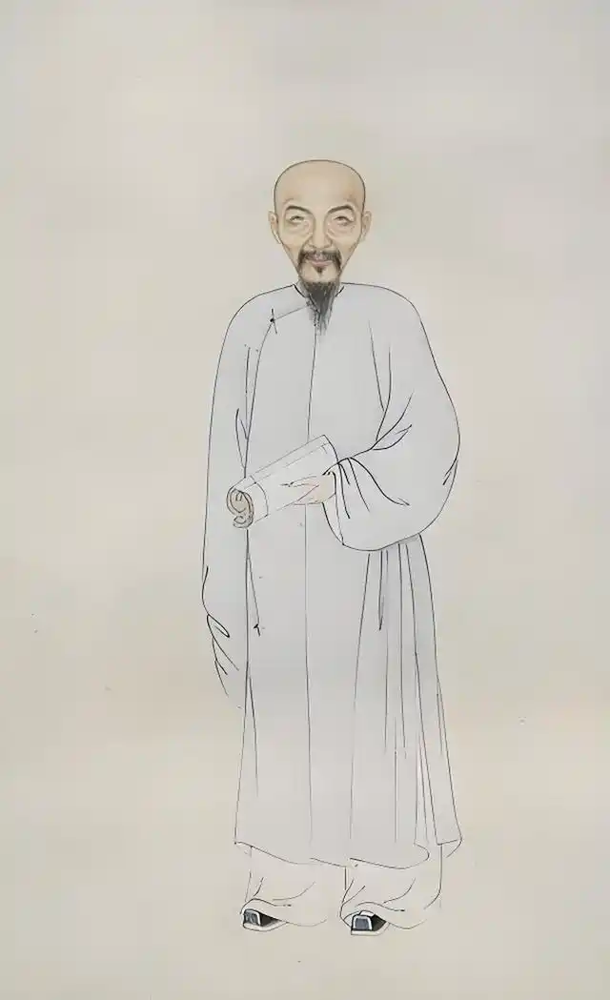